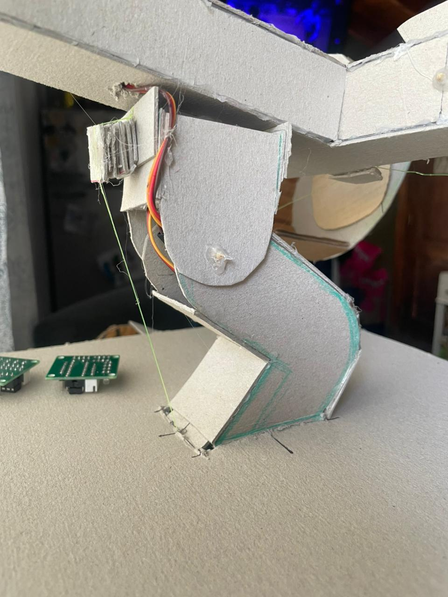
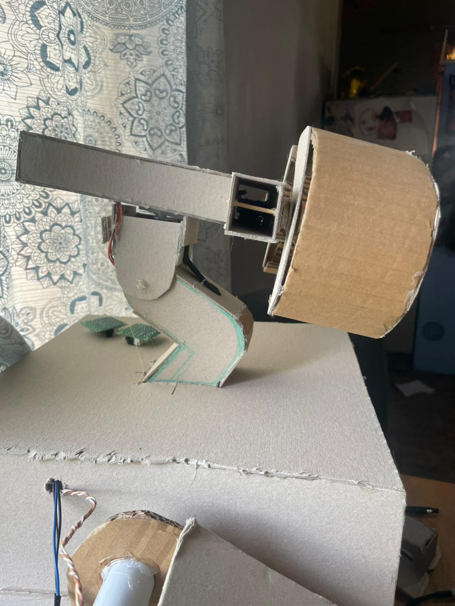

robot móvil Wall-E, creado para aplicar y reforzar conocimientos de programación y ensamblaje electrónico. El proyecto integra motores y servos para controlar los movimientos del robot y añade un compartimiento con apertura automática. El control se realiza desde un celular que actúa como joystick. El informe incluye los movimientos programados, la lógica utilizada y la lista de materiales necesarios.
Este proyecto fue seleccionado después de una detallada lluvia de ideas, principalmente por su alto grado de complejidad. Los factores decisivos incluyen la cantidad de procesos, programación y procedimientos requeridos, así como el desafío de sincronizar con precisión los pasos de ensamblado y la coordinación de movimientos con la configuración final.
El dispositivo tiene como objetivo inicial la transportación de cargas en su compartimento interno. La carga se ejecuta de forma manual en la zona frontal, con la asistencia de un usuario u operador. No obstante, la meta final del proyecto es evolucionar hacia una operación completamente autónoma, permitiendo que el Wall-E se deslice y transporte diferentes tipos de carga sin la intervención del usuario. Para lograr esta autonomía, se definirá un plan de mejoras a partir del análisis de los resultados del prototipo actual.
El dispositivo se activa por medio de un interruptor, el cual, al recibir corriente y datos de la placa ESP32, envía información a los servos que están conectados a las diferentes extremidades del Wall-E. Además, la ESP32, que dispone de conectividad inalámbrica Wi-Fi y Bluetooth, pero debido a la poca disponibilidad de pines tuvimos que recurrir a una esxtension para servos de esta misma, permite controlarlo de forma autónoma desde un dispositivo móvil (celular), utilizando un joystick para realizar los diferentes movimientos: los brazos, las muñecas, las manos, los ojos y las orugas (ruedas).
Muñeca 1: Un servomotor de 90° se posiciona a 120°, pasado el tiempo de 1 segundo gira de 120° a 0° con una repetición de 3 veces, luego una la espera de 1 segundo retorna a su posición inicial.
Muñeca 2: Un servomotor de 90° se posiciona a 0°, pasado el tiempo de 1 segundo gira de 90° a 0° con una repetición de 3 veces, luego una la espera de 1 segundo retorna a su posición inicial.
Mano 1: Un servomotor de 90° se posiciona a 0°, pasado el tiempo de 1 segundo, gira de 90° con una espera de 5 segundos, retorna a su posición inicial.
Mano 2: Un servomotor de 90° se posiciona a 0°, pasado el tiempo de 1 segundo, gira de 90° con una espera de 5 segundos, retorna a su posición inicial.
Ojos: Un servomotor de 90°, se posiciona a 90°, y gira 25° hacia un lado (dirección horaria) y permanece en esa posición durante 3 segundos. Luego gira 20° grados hacia el lado contrario (anti horario) y se mantiene allí 5 segundos, retorna a su posición inicial.
Puerta: Cada vez que se presiona el botón determinado, un servomotor de 90° se posiciona a 0° y, ya pegada la tapa de la caja, se programa para que cuando se presione se habrá la caja. Y el servo gire a 90°
Orugas: Un motor DC 12V con un engranaje que empuja a una de las tres ruedas, las otras dos se mueven gracias a la cinta que las recubre
Cuello: El movimiento del cuello se logra mediante un servomotor de mayor torque (Servo Ds04-nfc Rotación Continua 360° 5.5kg Arduino). Este servo realiza un giro aproximado de 45°, lo que acciona un sistema de tracción compuesto por una tanza unida a uno de los brazos del servomotor. Al tensarse la tanza durante la rotación, se genera el movimiento de elevación del cuello, permitiendo que la estructura se levante hacia arriba
 El proyecto Wall-E consiste en un robot móvil controlado por Bluetooth mediante la app Dabble. El sistema integra motores paso a paso, servomotores y un motor DC para permitir movimientos como avance, giro, elevación de brazos, apertura de puertas y expresiones con los ojos.
El código está desarrollado para un ESP32 e incluye funciones de control de locomoción, secuencias complejas (brazos, dedos y muñecas), control del cuello con puente H y movimientos automatizados usando sistemas de toggle y variables de estado. Se programan combinaciones de botones para acciones simultáneas, como avanzar mientras se mueve el brazo o realizar exploraciones con el cuello.
El robot Wall-E es controlado de forma inalámbrica mediante la aplicación Dabble, que se conecta al microcontrolador ESP32 a través de Bluetooth. La aplicación proporciona una interfaz tipo GamePad con múltiples botones que permiten controlar todos los movimientos y funciones del robot de manera intuitiva.
El robot cuenta con un sistema de orugas controlado por dos motores paso a paso 28BYJ-48 con drivers ULN2003:
lecha Arriba (↑): El robot avanza hacia adelante. Ambas orugas giran en sentido horario de forma sincronizada.
Flecha Abajo (↓): El robot retrocede. Ambas orugas giran en sentido antihorario.
Flecha Izquierda (←): Giro hacia la izquierda. La oruga derecha avanza mientras la izquierda retrocede, generando un giro sobre su propio eje.
Flecha Derecha (→): Giro hacia la derecha. La oruga izquierda avanza mientras la derecha retrocede.
Al presionar el botón Triangle, Wall-E realiza una secuencia de movimientos expresivos con los ojos mediante un servomotor
El botón Square controla la apertura y cierre de las puertas del compartimento de Wall-E mediante dos servomotores sincronizados
El botón Cross ejecuta una secuencia completa del brazo que incluye tres subsistemas:
Rotación del brazo: Un motor paso a paso 28BYJ-48 rota el brazo 120° (equivalente a mover de 270° a 30° en el círculo completo)
Movimiento de dedos: Los servomotores de ambos dedos realizan una secuencia de apertura y cierre
Rotación de muñecas: Similar a los dedos, las muñecas ejecutan movimientos rotacionales alternados durante aproximadamente 5 segundos
Al presionar nuevamente Cross, el brazo retrocede 120° volviendo a su posición original (270°).
El movimiento vertical del cuello del Wall-E se logra mediante un servomotor conectado a un sistema de poleas y tanza. En la parte superior del cuello se fija una tanza que, al ser traccionada por el servo, genera el movimiento de elevación de la cabeza. Cuando el servo se posiciona en un ángulo mayor (por ejemplo, 120°), tira de la tanza y provoca que la estructura del cuello se incline hacia arriba, haciendo que el Wall-E mire en esa dirección. Luego, cuando el servo retorna a su posición inicial (alrededor de 90°), la tensión deja de aplicarse y la cabeza vuelve a la posición recta. La programación utiliza la misma lógica toggle empleada en el sistema de las puertas: un único botón alterna entre “elevar” y “volver a posición neutral”. Al presionar el botón, el programa verifica el estado actual del cuello y mueve el servomotor al ángulo correspondiente. Esto asegura un movimiento controlado, repetible y sincronizado sin que el servo repita la acción mientras el botón siga presionado.
El sistema también soporta combinaciones de botones para ejecutar secuencias más elaboradas:
Al presionar simultáneamente las flechas de dirección y Cross, el robot puede:
Modo 1: Avanzar mientras ejecuta la secuencia completa del brazo (rotación + dedos + muñecas)
Modo 2: Detener el movimiento y devolver el brazo a su posición original
Esta combinación ejecuta una secuencia de exploración:
Modo 1: El robot avanza mientras el servo del cuello realiza un patrón de búsqueda, moviendo la cabeza entre tres posiciones (90° → 120° → 180°) en ciclos de 2 segundos, repitiéndose dos veces completas
Modo 2: Detiene el robot y devuelve el cuello a posición neutral (90°)
Esta secuencia simula el comportamiento del Wall-E original cuando explora su entorno.